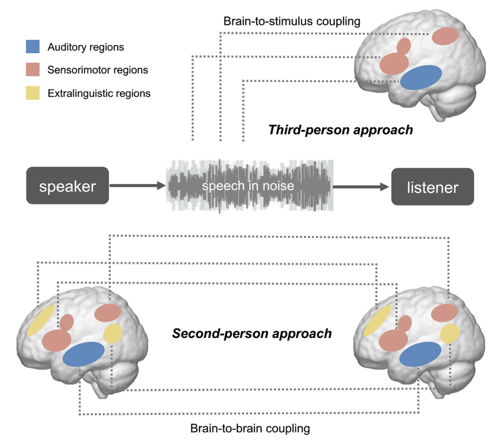
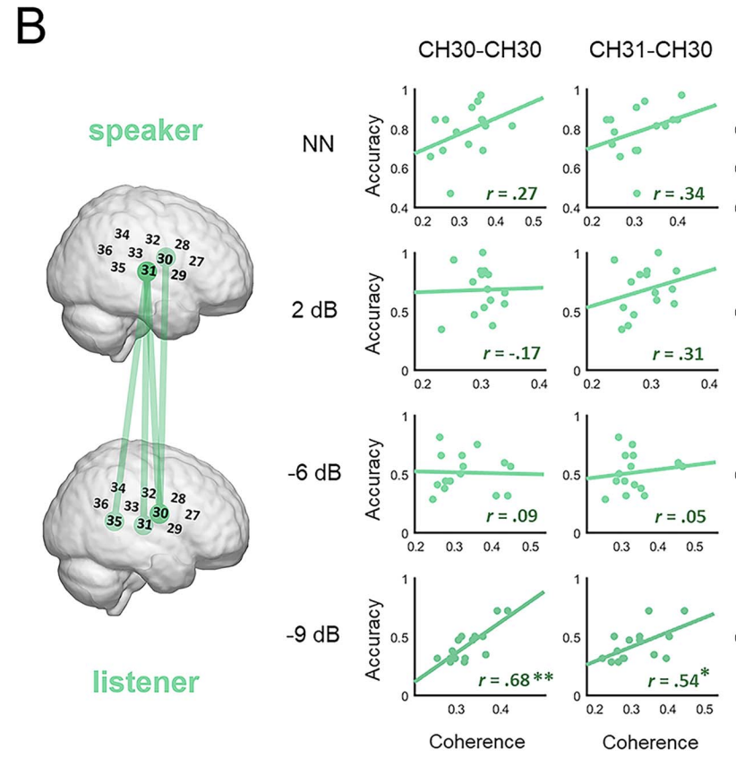
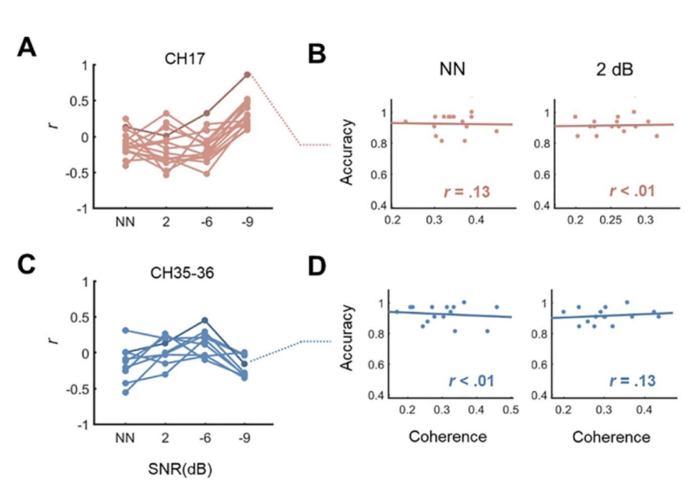

Zhuoran Li
About Me
Hi, I’m Zhuoran, a postdoctoral research scholar in the Jiang Lab at the University of Iowa. I’m passionate about uncovering how the human brain processes speech and language across different contexts and populations. I earned both my B.S. in Physics and Ph.D. in Psychology from Tsinghua University, after ranking first in the National College Entrance Exam in Hunan Province, China.My research explores the neurocognitive mechanisms of human communication and specifically focuses on:
- Speech-in-noise comprehension: Using fNIRS-based inter-brain approaches to study how young adults, older adults, and non-native speakers process speech in challenging environments
- Multimodal neuroimaging: Integrating techniques such as fMRI, intracranial EEG, eye-tracking, and transcranial magnetic stimulation (TMS)
- Human communication: Advancing the understanding of the neurocognitive mechanisms underlying speech and language processing across diverse populations
At the Jiang Lab, I’m continuing this work with the goal of pushing the boundaries of what we know about the brain’s role in communication.
Selected Publications
-
 Cognitive NeurodynamicsCognitive Neurodynamics, Volume 18, pages 371–382, (2024)
-
 Cerebral CortexCerebral Cortex, Volume 33, Issue 7, 1 April 2023, Pages 3701–3714
-
 Cerebral CortexCerebral Cortex, Volume 31, Issue 10, October 2021, Pages 4719–4729
Powered by Jekyll and Minimal Light theme.